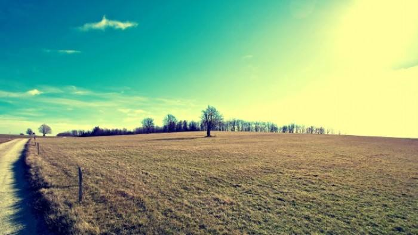

在青春这个如梦似幻的年华里，渴望美好爱情的到来是每个孤独久了，单身长了的人内心的愿望。流年美好，本该不负离殇。
然而……
当你一个人在路上走着，本来漫不经心，心无旁骛的欣赏着前方的风景，觉得太阳的照射至少不会那么刺眼，因为这给你带来了影子的陪伴，嘴角勾起了一丝丝淡定从容的微笑，觉得这样也不错。但是不经意间瞥见了旁边石子路上相携而来的两道倩影，男子虽不是帅气逼人，英俊挺拔，女子也不是倾城之容，羞花之貌。但是在阳光的照射下，微风拂过女孩的脸颊，吹起的头发拂于男孩的鼻尖，两人会心一笑间，和谐的迷离了眼。你莫名的想起了一句话：“去见你爱的人吧！趁微风不燥，阳光正好，趁你还年轻，他还未老”。
是啊，多美的话呀，也会幻想一下，那个ta和自己走在路上的情形……可低头看见脚边的影子，心里酸涩了一下，ta应该还在路上吧，勾起了连自己都没有察觉出来的凉笑。应该是无奈的笑吧，笑自己为什么还没有习惯一个人的路，笑自己为什么会幻想，笑自己究竟是怎么了……于是你不知不觉间加快了脚步，留给背后的或许是个落荒而逃的背影吧。在心里暗暗下决心，以后还是少看这路边的风景吧。也许它并不适合这样的自己欣赏。
时针不停，时间不会静止。当眼前的风景换了一茬又一茬的时候，当你已然习惯身边如影随形成双入对的情侣的时候，当你目睹了闺蜜舍友的对象也换了一茬又一茬的时候，我想你此时的内心是淡然的，平静的，如无人取水的古井，没有半点的波澜。甚至，有一种世人皆醉我独醒的感觉，不会莫名的酸涩，不会逃避有情侣的地方，不会再盯着自己孤独的影子发呆。羡慕的不再是阳光明媚里相伴的情侣，而是落日余晖中携手而行的老人。只是觉得命里该什么时候出现的人，ta应该什么时候出现吧。遇到了是缘，遇不到的是命吧。
路还是要走，风景还是要看，最美的年华，即使没有ta的陪伴，也还是要淡然的走过。清冷孤傲的身影是对自己影子的褒奖，一笑置之的潇洒是风花雪月中的情侣无法模仿的神态。内心的淡定从容是任何人无法匹及的高度。
淡然处之，自己亦是风景。